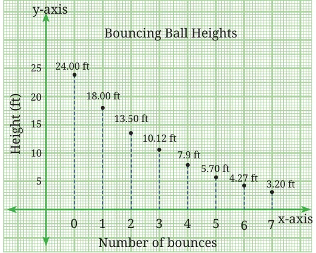

The sequence of heights forms a GP with \(a = 18\) and \(r = 0.75\) (or \(\frac{3}{4}\) ), that is, 18, 13.5, 10.125, 7.594, 5.695, 4.27125, 3.2034375, … . We see that after the seventh bounce the ball remains below \(\frac{1}{6}\) of the height at which it started.
- Find the \(12^{\text{th}}\) term of a GP with common ratio 2, whose \(8^{\text{th}}\) term is 192.
- Find the \(10^{\text{th}}\) and \(n^{\text{th}}\) terms of the GP: 5, 25, 125, ... .
- A sequence is given by the recursive rule \(t_{1} = 2\), \(t_{n+1} = 3t_n - 2\) for \(n \ge 1\). Which term of the sequence is 730?
- Which term of the GP: 2, 6, 18, … is 4374? Write the explicit formula as well as the recursive formula for the \(n^{\text{th}}\) term.
- A ball is dropped from a height of 80 metres. After hitting the ground, it bounces back to 60% of the height from which it fell. It continues bouncing in this way - each time rising to 60% of the previous height.
- What height does the ball reach after the \(5^{\text{th}}\) bounce?
- What is the total vertical distance the ball has travelled by the time it hits the ground for the \(6^{\text{th}}\) time?
- Which term of the sequence \(2, 2\sqrt{2}, 4, \ldots\) is 128?
- Fig. 8.12 shows Stages 0 to 3 of the Sierpiński square carpet.
Stage 0 of this fractal is a square sheet of paper. To construct Stage 1, each side of the square is trisected and the points of trisection of opposite sides are joined to obtain nine smaller squares. The centre square is then removed and the 8 smaller squares are retained, leaving a square hole in the centre. The same process is repeated on the eight smaller shaded squares to obtain Stage 2 and so on.
Stage 0 Stage 1 Stage 2 Stage 3 Fig. 8.12: Stages 0, 1, 2 and 3 of the Sierpiński square carpet
Look at Fig. 8.12 and try to answer the following questions.
- How many red squares are there in Stages 0 to 3?
- Can you predict the number of red squares in Stages 4 and 5?
- Can you find a rule for the number of red squares at the \(n^{\text{th}}\) stage? Write the explicit formula as well as the recursive formula for the number of red squares at any stage.
- Suppose the area of the square in Stage 0 is 1 square unit. What is the area of the red region in Stages 1, 2 and 3? What will be the area of the red region in Stages 4 and 5? Find the explicit as well as the recursive formula for the area of the red region at the \(n^{\text{th}}\) stage. What happens to this area as \(n\), the number of stages, goes on increasing?
- Find the \(31^{\text{st}}\) term of an AP whose \(11^{\text{th}}\) term is 38 and \(16^{\text{th}}\) term is 73.
- Determine the AP whose third term is 16 and whose \(7^{\text{th}}\) term exceeds the \(5^{\text{th}}\) term by 12.
*3. How many three-digit numbers are divisible by 7? (Hint: All three-digit numbers divisible by 7 form an AP. Find the smallest and largest such three-digit numbers.) *4. How many multiples of 4 lie between 10 and 250? (Hint: All multiples of 4 form an AP. Find the smallest and largest multiples of 4 between 10 and 250.) *5. Find a GP for which the sum of the first two terms is \(- 4\) and the fifth term is 4 times the third term. *6. Find all possible ways of expressing 100 as the sum of consecutive natural numbers. *7. The number of bacteria in a certain culture doubles every hour. If there were 30 bacteria present in the culture originally, how many
bacteria will be present at the end of the \(2^{\text{nd}}\) hour, \(4^{\text{th}}\) hour and \(n^{\text{th}}\) hour?
*8. The sum of the \(4^{\text{th}}\) and \(8^{\text{th}}\) terms of an AP is 24 and the sum of the \(6^{\text{th}}\) and \(10^{\text{th}}\) terms is 44. Find the first three terms of the AP. *9. Find the smallest value of n such that the sum of the first n natural numbers is greater than 1,000.
- Which term of the GP: 2, 8, 32, … is 131072? Write the explicit formula as well as the recursive formula for the \(n^{\text{th}}\) term.
- The sum of the first three terms of a GP is \(\frac{13}{12}\) and their product is \(-1\). Find the common ratio and the terms.
- If the \(4^{\text{th}}\), \(10^{\text{th}}\) and \(16^{\text{th}}\) terms of a GP are x, y and z respectively, prove that x, y, z are in GP.
*13. The sum of the first three terms of a geometric progression is 26, and the sum of their squares is 364. Find the terms of the GP. *14. Suppose \(P_{1} = 1\), \(P_{2} = 2\) and for \(n > 2\), \(P_n = P_1 + P_2 + \ldots + P_{n-1} + 1\). Find the values of \(P_1\), \(P_2\), …, \(P_8\). Can you find a simpler recursive formula for \(P_n\)? Can you give an explicit formula? *15. Suppose \(W_{1} = 1\), \(W_{2} = 2\) and for \(n > 2\), \(W_n = W_1 + W_2 + \ldots + W_{n-2} + 2\). Find the values of \(W_1\), \(W_2\), …, \(W_8\). Do you recognise this sequence?
Chapter Summary
- A sequence is an ordered list of numbers. Each number in the list is called a term.
- A general formula or rule for a sequence is a rule that can be used to generate each term. An explicit formula is a rule that uses the term’s position number, n, to calculate the term’s value.
- A recursive formula is a rule that gives the value of a given term using the values of previous terms.
- The triangular number sequence is given by 1, 3, 6, 10, 15, … . Each term is the sum of the natural numbers up to the position of that term. The \(n^{\text{th}}\) term is given by \(t_n = \frac{n(n+1)}{2}\), which is also the formula for the sum of the first \(n\) natural numbers.
- An arithmetic progression (AP) is a list of numbers in which each term after the first term is obtained by adding a fixed number d to the previous term. The fixed number d is called the common difference.
- The \(n^{\text{th}}\) term of an AP is given by \(t_n = a + (n - 1)d\), where \(a\) is the first term and \(d\) is the common difference. The general form of an AP is \(a, a + d, a + 2d, a + 3d, \ldots, a + (n - 1)d\).
- A geometric progression (GP) is a list of numbers in which each term after the first term is obtained by multiplying the previous term by a fixed number. This constant factor r is called the common ratio.
- The \(n^{\text{th}}\) term of a GP is given by \(t_n = ar^{n-1}\), where \(a\) is the first term and \(r\) is the common ratio. The general form of a GP is \(a, ar, ar^2, ar^3, \ldots, ar^{n-1}\).
- Many attributes of fractals, such as the Sierpiński triangle and the Sierpiński square carpet, lead to geometric progressions.